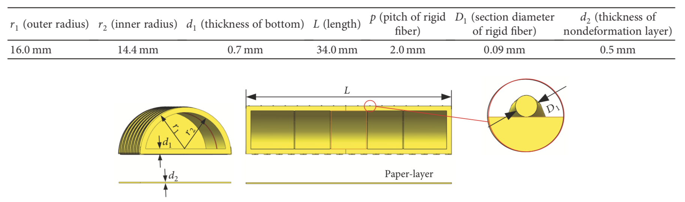
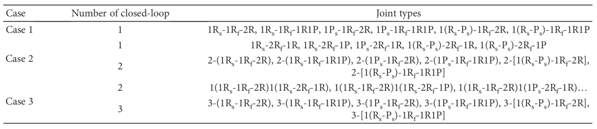

Finger Soft Actuator
Research @ Beihang University | 2017 W
Compared with the traditional rigid finger actuator, the soft actuator has the advantages of light weight and good compliance. This type of finger actuator can be used for data acquisition or finger rehabilitation training, and it has broad application prospects. The motion differences between the soft actuator and finger may cause extrusion deformation at the binding point, and the binding forces along nonfunctional direction may reduce drive efficiency. In order to reduce the negative deformation of soft structure and improve comfort, the configuration synthesis and performance analysis of the finger soft actuator were conducted for the present work. The configuration synthesis method for soft actuator was proposed based on the analysis of the physiological structure of the finger, and the soft actuator can make the human-machine closed-loop structure including n joints (n = 1, 2, 3) meet the requirement of DOF (degrees of freedom). Then the typical feasible configurations were enumerated. The different typical configurations were analyzed and compared based on the establishment of mathematical models and simulation analysis. Results show that the configuration design method is feasible. This study offers a theoretical basis for designing the configuration of finger soft actuator.
Pulication
Applied bionics and biomechanics | Configuration Synthesis and Performance Analysis of Finger Soft Actuator. Zhang, Z., Chen, H., & Zhang, Z. (2018).
Design | The main factors which can affect the performance of the soft actuator are the material, driving mode, and structure. The material of the soft actuator is silicone rubber. The drive mode is pneumatic, which has the advantages of quick response and simple control. The basic structure of the soft actuator is shown in Figure 1, and it consists of main body structure, paper-layer, rigid fiber, and rigid limit structure. The cross section of the main body structure is a semicircle with cavity. Paperlayer is used to realize different motion modes. When the paperlayer is posted on the bottom of the structure, the soft structure realizes the bending deformation under air pressure because it limits the extension of the bottom. When the paperlayer is not used, the soft structure can realize the elongation deformation. Fiber is used to prevent the expansion of the soft structure in the cross section, which may reduce the amplitude of the bending or elongation. Rigid limit structure is installed on the inside of the cavity. It is used to prevent inward contraction of the bottom of the soft structure, which may lead to excessive expansion of the bottom, and result in the interference between the soft structure and the finger.
The parameters of the soft structure are shown in Table 1 and Figure 2.
Figure 1. Schematic diagram of basic soft structure
Table 1
Figure 2. Image acquisition interface
Different from the traditional rigid motion pair, the soft structure can be used alone or in combination. It means that the soft structure can not only realize the bending deformation or elongation deformation but also can realize compound motion through the irregular distribution of the paperlayer, which is one of the important characteristics of the soft structure, and enriches the motion form of the soft actuator.
In order to prove the feasibility of soft structure design, the simulation is conducted with the ABAQUS. Figure 3 shows the deformation process of the soft structure for the bending deformation, elongation deformation, and compound deformation. The design of the soft structure can meet the deformation requirement.
Figure 3. Deformation of soft structure. (a) Bending deformation; (b) elongation deformation; (c) compound deformation.
Discussion | According to the number of finger joints that needs to be driven, there are three kinds of cases for the configuration synthesis of the soft actuator. The close-loop structure is shown in Table 2. Rs and Ps mean the soft actuator with bending deformation and elongation deformation, respectively. (Rs-Ps) means the soft structure with compound deformation. Rf means the equiva- lent finger joint. R and P are the passive joints.
Table 2

Case 1: driving for single joint
In this case, the soft actuator should be able to drive a single joint independently.
Figure 4. Typical structure forms for closed-loop 1. (a) 1Rs-1Rf-2R; (b) 1Rs-1Rf-1R1P; (c) 1Ps-1Rf-2R; (d) 1Ps-1Rf-1R1P.
Case 2: driving for two joints simultaneously
Figure 5. Typical structure forms for closed-loop 2. (a) 1Rs-2Rf-1R; (b) 1Rs-2Rf-1P; (c) 1Ps-2Rf-1R.
Case 3: driving for all the joints simultaneously
Figure 6. Typical structure forms for case 3. (a) 3-(1Rs-1Rf-1R1P); (b) 3-(1Ps-1Rf-2R).
Conclusion | This paper focuses on the configuration synthesis of the fin-ger soft actuator based on the motion difference between continuous deformation of the soft structure and joint movement of the finger to reduce the negative deformation of the soft structure and improve comfort.
(1) The configuration synthesis method for finger soft actuator is proposed. This method can make the human-machine closed-loop meet the DOF requirement by adding the passive joints, and the man-machine negative binding forces can be relieved. The closed-loop which contains one finger joint, two-finger joints, and three-finger joints and series of multiple closed-loop are analyzed.
(2) In order to further analyze the feasibility of human-machine closed-loop design method, the mathematical modeling and simulation are conducted for the closed-loop containing different finger joints. The motion law of passive joints demonstrates the necessity of configuration design through the addition of passive joints. Otherwise, the movement of the passive joints will be offset by the extrusion deformation of the soft structure. And it may make the finger suffer the negative binding forces.
(3) For the different configuration of case 1 (the closed-loop contains one finger joint), the structure complexity, interference phenomenon, and force transmission characteristics are analyzed, and the analysis results reflect the performance difference of different configurations. The above research provides a reference for the design method and configuration optimization of the soft actuator. Further extensions to this work include structural parameter optimization, prototype design, and the experiment test.